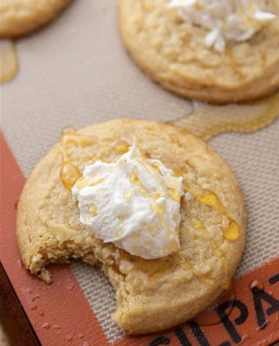

Cornbread Cookies

Decription
This is a copycat recipes of the scrumptious Crumbl Cornbread Cookie.These cookies are soft and chewy with a deep butter honey flavor. Each cookie is topped with a honey buttercream and a drizzle of honey.
Ingredients
- Butter - 1 stick
- Canola Oil - 1 tbsp
- Granulated Sugar - 1/4 cup
- Brown Sugar - 1/2 cup
- Egg - 1
- Vanilla Flavoring - 1 teasp
- Butter Flavoring - 1/2 teasp
- Honey - 1tbsp
- All Purpose Flour - 1 cup
- Cornstarch - 1/3 cup
- Baking Soda - 1/2 teasp
- Cream Of Tartar - 1/4 teasp
- Cornmeal - 3/4 cup
- Salt 1/2 - teasp
- Softened Butter - 6 tbsp
- Powdered Sugar - 3/4 cup
- Honey 2 - teasp
- Vanilla Flavoring - 1 teasp
- Milk - if necessary add a little at a time
Steps
- Cream the butter, oil, brown sugar, and granulated sugar together until light and creamy.
- Add in the egg, vanilla, and butter extract and mix until combined.
- Sift in the flour, corn starch, salt, baking powder, and baking soda, then add in the cornmeal and mix until combined.
- Scoop out 14 equally sized cookie dough balls, roll them in extra cornmeal, and place them on a baking sheet and bake in the preheated oven. If you don’t want to roll them into the cornmeal, you can omit this step.